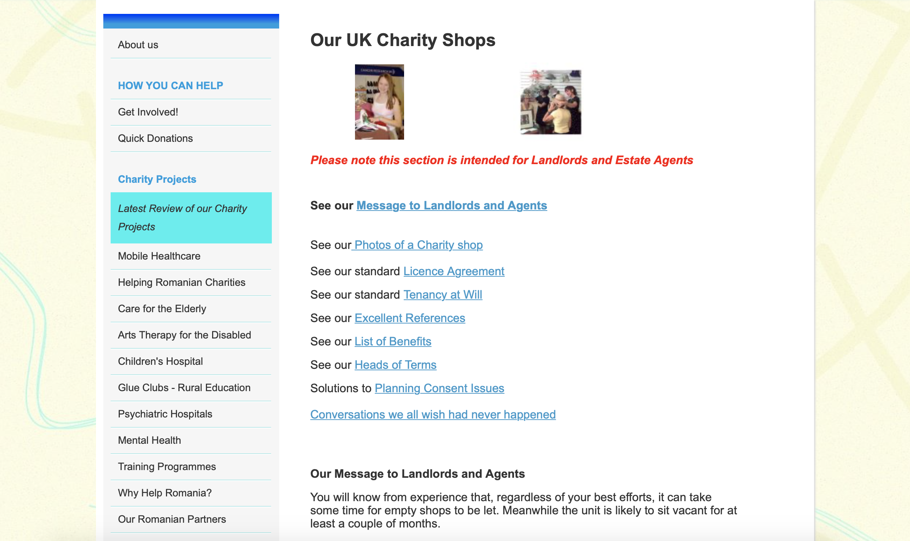
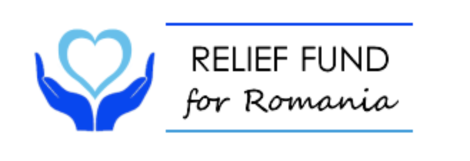

Research
There were two focuses of the research I conducted on the client, The Relief Fund for Romania. The first was primary research on the client themselves, the second was outside research.
Primary Client Reasearch
Current Website Research
The Relief Fund for Romania is a orginazition aimed to direct relief efforts and provide aide to at-risk and needy in Romania. This is accomplished by raising funds through volunteer run pop-up shops, partnerships with existing Romanian and international orginizations and collection of donations. The main point of the primary research was to gauge the extent of the client outreach and what tools, if any, were used. There were two main methods other than donations: partnerships and UK based charity shops.
Partnerships
The client emphasized passed workings with other orginizations, both known and unknown. There was alot of financial information on almost every page, which is helpful, but only to those who want or need to see it.

Charity Shops
The client hosts volunteer run pop-up shops throughout London. The arrangements are mutually beneficial as the client will fix up vacant buildings for landlords in exchange for low rent and the ability to sell for a few months at a time.
Preexisting Media
There is no preexisint social media or online presence other than the current website. Between 2000 and 2004 the client released a documentary video describing the process of bringing art and touch therapy into romanian institutions for the disabled. in addition to this video there was a handbook paired with it. Both of these elements are very dated.

Current Logo
The current logo utilizes typography not seen anywhere else on the site. The colors used are vibrant but harsh to the eyes. There are several uneeded elements such as the lines above and below the type. The logo would definitly need to simplified for use.
Secondary Research
Current Events In Romania
The first step in secondary research was to catch up on the current events in Romania. Fortunately, Romania recently entered the global stock exchange and their economy seems to be on this rise. This will give way to more open travel and tourism which will hopefully start to raise awareness to the plight of many Romanians.
Orphanages
Children are one of the three main target groups of the client. Currently in Romania, children only reach around 58% of their productive potential. The children who were victims of the previous dictator's regime are adults now, but have resulted in a vast "lost generation" of socially and sometimes physically inept adults. There was a government effort to close all reamining state institutions by 2020, but instead there are many that only got aesthetic facelifts. The abuse and neglect still happen. Romania is now a closed adoption country, meaning only those with Romanian citizenship can adopt, but due to poverty levels adoption is almost impossible.
Disabled
The second target group is the disabled in Romania. Romanian society is slow to integrate those with mental and physical defects. Out of 100,000 disabled children, only 8,000 are integrated. These children and adults cannot attend school unless it is a private school run by a charity or religious orginization. Only 28% of disabled Romanians receive any kind of education. However, there have recently been changes to various laws, giving disabled Romanians more social and cultural opportunities.
Poverty
Next to orphans and orphanages, the impoverished in Romania are the biggest need that the client organization faces. Rural Romania is more impoverished than not. many families hand to mouth, day to day. Thirty percent of all Romania lives below the poverty line. Most do not have running water or electricity. In order to attend school, children must meet certain hygenic requirements and most are either unable to attend or dropout early. There are also high physical and substance abuse rates in these villages. The lack of education is one rerason the cycle continues.
Other Websites


Interviews
Due to multiple failed attempts to correspond with those at The Relief Fund for Romania, I was unable to conduct an interview with the client. However, it was possible to have interviews with members of three out of four of the main audience groups. Each participant had similar questions, but some were tailored specifically to their age group or occupation in order to get more specific feedback.
User Interviews
Amy Cannavo

Amy Cannavo is president of the Priscilla Circle women's ministry at her church in Bear, Delaware. Among other outreach projects, the Priscilla Circle also heads many of the church's charity and donation efforts.
Amy's interview shed some much important light on the more business aspect of charity work. While churches would love to help everyone, there are important things to consider when trying to discern whether or not to direct efforts towards a specific cause. The presence of financial information would be a necesity to church groups and potential partner orginizations. How much of the donations actially goes to aide? What other orginizations have partnered with this charity before? For this audience, legitimacy and facts were more important. Amy also noted that church members were more likely to donate and be involved if there was a return of information. This could be photos of progress made with funds, letters or notes from sponsored families, or even something as simple as an update on the project. This was definitely something to consider with sponsorship specifically, in what way could a personal connection be made?
Charlie Classe

Charlie Classe is an Art Education major at Anderson University. She represents the young adult portion of the audiences. As an art education student, Charlie brings both a fresh, young persepective but also one grounded in a passion for education and the arts, two things that the client has projects for.
This interview was helpful with many things, but mostly the aesthetic elements that would be present on the site. Simple and clean home and landing pages are a must, as they set the immediate tone for the rest of the site. Graphics and icons would also be helpful in order to visualize numbers and events better, especially with the amont of education taking place on the site. Making a personal connection was equally as important in this case as with church groups. In this case that means photos and stories to actually put names and faces to those in need. Social media is a major part of how young adults find and absorb information. Creation and use of these platforms would not only help increase traffic, but also raise more awareness of the present situation. Short videos or inforgraphics are the easiest to share on platforms like instagram and twitter, with youtube being a place where news and general information can be found. Ahe major takeaway from this interview was that the way information was delivered would be the most important when trying to and atract younger audiences and educate them in order to spread awareness.
Gina Beckmeyer
Gina Beckmeyer is a wife and mother of nine representing the largest portion of the target audiences, adults. Gina and her family are Catholic, bringing a religious factor into the charity discernment process.
In her interview, Gina expressed many similar sentiments to Charlie when it comes to aesthetics. The home page needs to be simple and tabs need to be simplified. Too much information at once can be very overwhelming. The lack of photos is also a recurring issue. As it is now, the site is very impersonal and gives no real insight into the real people on the other end. Interestingly, Gina stated that she would most likely find and donate to the site after hearing about it from a friend. this makes education and word of mouth, social media to be exact, even more important. In all three interviews, each participant said that they would donate to orphans and orphanages first out of the other main projects the client currently supports. This either means that more emphasis needs to be put on that project, or the other way around so that all issues receive donations equally.